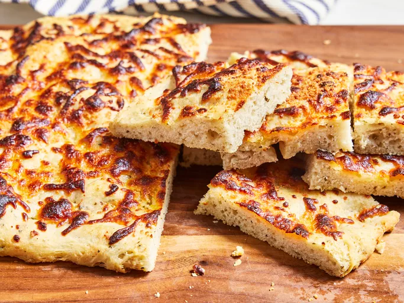

Focaccia
Home

How to Make Focaccia
Focaccia is a leavened flat bread. The oven-baked Italian dish can be served as a side or used as sandwich bread. It’s traditionally made with flour, yeast, oil, water, and salt. Some recipes, such as this one, are flavored with seasonings and topped with cheese.
You'll find a detailed ingredient list and step-by-step instructions in the recipe below, but let's go over the basics:
Key Focaccia Ingredients
- Flour: This focaccia recipe starts with all-purpose flour, which gives the dough structure.
- Yeast: Active dry yeast will help the focaccia bread rise.
- Salt: Salt enhances the flavor of the bread and the flavors of the other ingredients.
- Sugar: White sugar adds subtle flavor and helps activate the yeast.
- Seasonings: Season the focaccia with garlic powder, dried oregano, dried thyme, dried basil, and ground black pepper.
- Water: You’ll need a cup of water for the focaccia dough.
- Oils: Let the dough rise in a bowl coated with olive oil, then brush the dough with olive oil just before baking.
- Cheeses: Sprinkle the dough with mozzarella and Parmesan cheeses before baking.
Recipe Ingredients
- 2 ¾ cups all-purpose flour
- 1 tablespoon active dry yeast
- 1 teaspoon salt
- 1 teaspoon white sugar
- 1 teaspoon garlic powder
- 1 teaspoon dried oregano
- 1 teaspoon dried thyme
- ½ teaspoon dried basil
- 1 pinch ground black pepper
- 1 cup water
- 1 tablespoon vegetable oil
- 2 tablespoons olive oil
- 1 cup mozzarella
- 1 tablespoon grated Parmesan cheese
Directions
- Combine flour, yeast, salt, sugar, garlic powder, oregano, thyme, basil, and black pepper in a large bowl. Add water and vegetable oil, then mix until dough comes together.
- Turn dough out onto a lightly floured surface and knead until smooth and elastic.
- Lightly oil a large bowl; place the dough in the bowl and turn to coat with oil. Cover with a clean, damp cloth and let rise in a warm place for 20 minutes.
- Preheat the oven to 450 degrees F (230 degrees C). Lightly grease a baking sheet.
- Punch dough down and place on prepared baking sheet. Pat into a 1/2 inch thick rectangle. Brush top with olive oil and sprinkle with mozzarella and Parmesan cheese.
- Bake in the preheated until golden brown, about 15 minutes.
- Cut into 12 pieces and serve warm.